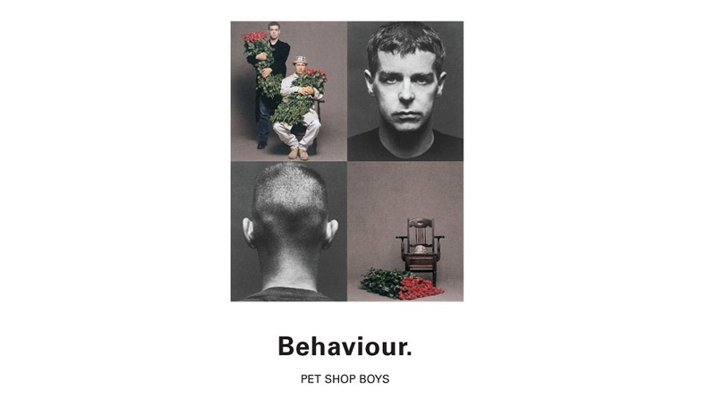

Les presento a una de mis bandas new wave favoritas:
Pet Shop Boys

Reseña de la banda:
Esta gran banda está formada por Neil Tennant y Chris Lowe desde 1981. Durante sus comienzos se llamaron "West End" pero pronto ese nombre daría paso al definitivo de Pet Shop Boys.
Su primer trabajo publicado fue una primera versión producida por Bobby Orlando del que luego sería su primer número 1: West end girls. Sin embargo en aquella ocasión pasó desapercibido entre el público. Epic, la discográfica que les había fichado, decidió rescindirles el contrato y el 1985 firman contrato con Parlophone.Uno de mis discos favoritos, de Pet Shop boys es Behavior, el cual fue lanzado en el año 1990. Estas son sus canciones:

- Behavior (1990)
- Being Boring
- This Must Be The Place I Waited Years to Leave
- To Face the Truth
- Only the Wind
- My October Symphony
- So Hard
- Nervously
- The End of the World
- Jelousy